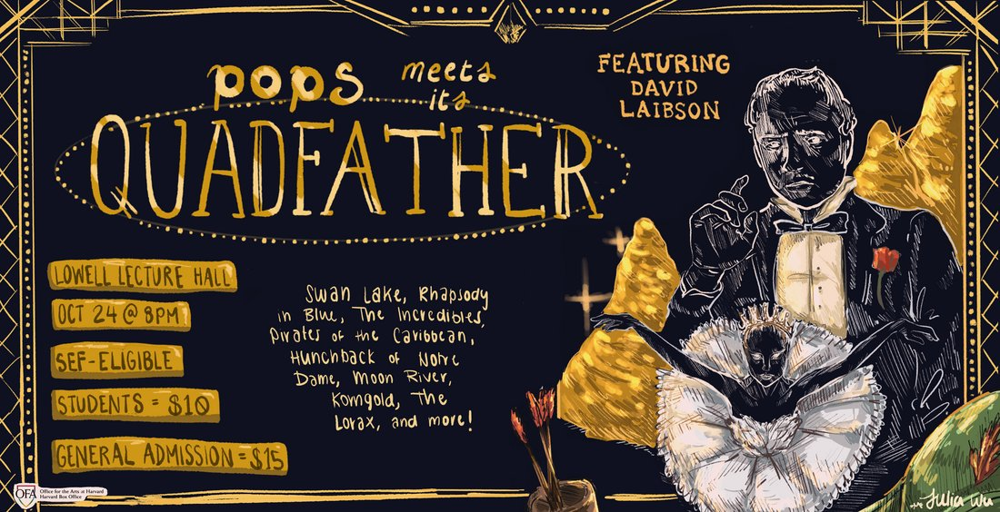
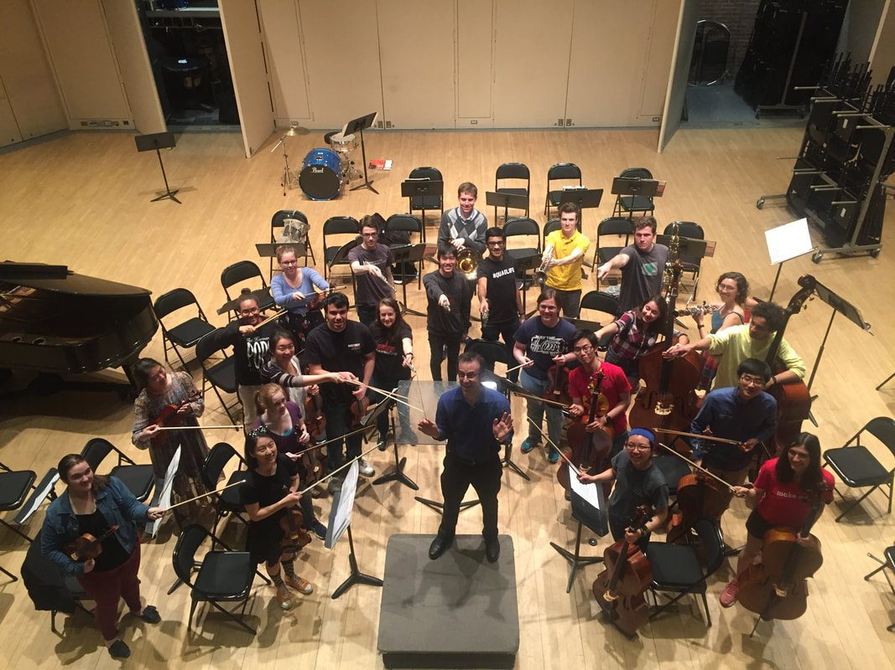
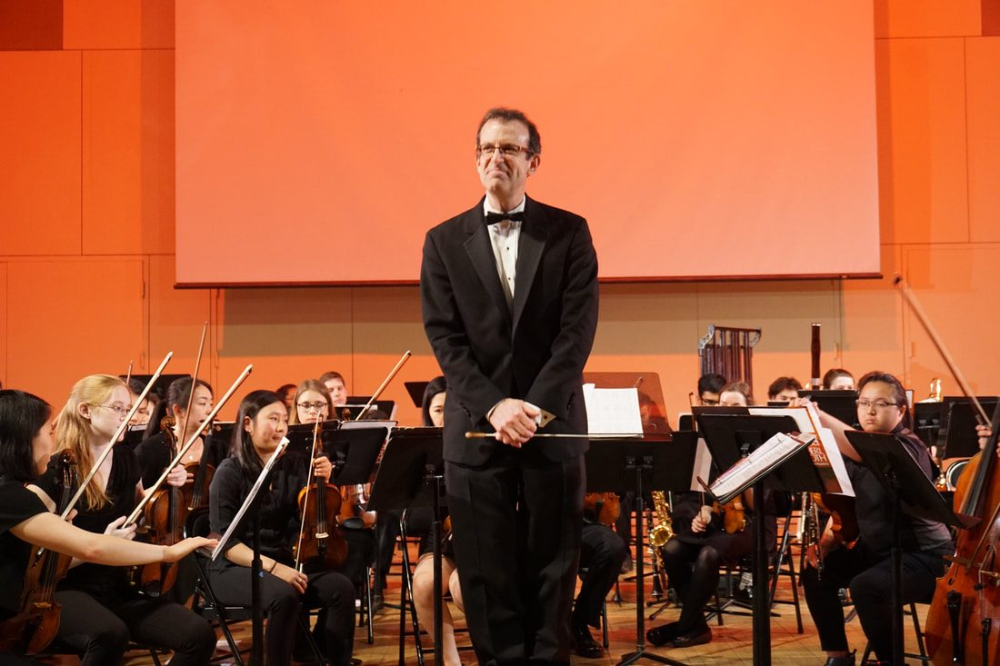

film music ♩ JOHN WILLIAMS ♩ classical music ♩ Show tunes ♩ JAZZ CLASSICS ♩ POP HITS ♩ film music ♩ JOHN WILLIAMS ♩ classical music ♩ Show tunes ♩ JAZZ CLASSICS ♩ POP HITS ♩

Pops meets its Quadfather
Saturday, October 24th at 8-10pm · Lowell Lecture Hall
Now playing · Up next
Saturday, October 24th at 8-10pm
Lowell Lecture Hall
Extra, extra! Read all about it! The Quab Theatre presents the most famous ballet of the 20th Century (Fanfare), featuring the gorgeous, glamorous, Incredible(s) prima ballerina Desmerelda as the Black Swan (Swan Lake). But beneath Desmerelda’s alluring demeanor lies a terrible secret: just How Bad She Can Be (The Lorax), as the only daughter of The Quad(God)father. Meanwhile, lowly stagehand Robbin’ (Hood) is feeling (Rhapsody in) Blue as she watches from the shadows, dreaming that One Day (Pirates of the Carribbean) it will be her turn to dance Out There (Hunchback of Notre Dame) in the limelight. Will Robbin’ find a way to take center stage? Who can (William) Tell? Find out in Pops Meets Its Quadfather!
Purchase tickets hereAct I
Founded in 1996 by Eric Damast ‘97, the Harvard Pops Orchestra is a full symphonic orchestra conducted by our music director, Allen Feinstein ‘86. Since its inception, the Harvard Pops Orchestra has become renowned for its unconventional, adventurous, and inventive programs. Through seasonal concerts built around creative themes, the Harvard Pops performs a variety of classical repertoire, standard pops works, and arrangements and original compositions written by students. The members of the orchestra are joined by actors and singers who bring a theatrical and visual element to each concert.
The defining difference between Pops and other musical groups at Harvard is our combination of student-written scripts and music, original films, and eclectic repertoire to concoct concerts that are less concerts and more theatrical music productions. Each of our concerts is themed (for instance: British murder mystery, Western, time travel), and is filled with acting, singing, and of course, playing. We have three concerts each year, each with its own unique plot, script, and program. Our two full shows in the fall and spring are held in Lowell Lecture Hall, while our shorter winter concert is in the SOCH.
The best way to understand Pops is by watching some of our work! You can watch our past concerts, or look through our photos and other media.
The Harvard Pops Orchestra is formally recognized by Wikipedia as a student-run organization at Harvard College. It is a full symphonic orchestra producing two major concerts a year, with repertoire ranging from popular music to unpopular music, film scores by John Williams, Broadway hits, classical pieces your friends will actually recognize, and Disney ballads by Jang Choe. Each of our shows has an unhinged plot and singers, with guest professors like David Laibson, Andrew Berry, Jacob Barandes, and Joseph Blitzstein acting in our shows (no female professors have agreed to embarrass themselves yet, but we’re working on it). Check out the concerts page if you want to see the person who gave you an A- in a funny costume. It will make you feel better.


Allen Feinstein '86 has been Music Director of the Harvard Pops Orchestra since fall 1998. Over the years, he has led the Pops as they accompanied silent films by Chaplin and others, including original films made by Pops members. In the spring concert of 2010, there were two readings of Allen's musical about the early days of silent film, Dramatic Agitato No. 37, for which he wrote the book, music, and lyrics. In recent years, Harvard Pops has not only accompanied merited films, but has distinguished itself from other Pops orchestras by putting on student-led theatrical and laughter-filled performances. Recent concerts showcase student-created scripts that boast themes such as "Hunted: a Murderous Musical" (2016) and "Pops Ahoy: A Nautical Narrative" (2014)
In addition to leading the Pops Orchestra, Allen is an accomplished musician, conductor, composer, and professor. In the summer of 2010, his Three Dances for Oboe, Bassoon, and Piano was premiered at the International Double Reed Conference in Oklahoma with original choreography. He composed a score to D.W. Griffith's silent short film Voice of the Violin, for Treasure 3, a project of the National Film Preservation Foundation. He also orchestrated the full-length film Where Are My Children? for that DVD compilation, which was released in October 2007. The DVD set was on many 'best of' lists for 2007, including those of The New York Times, Time Magazine, and The New Yorker. His concerto for euphonium and orchestra received the Phillips Composition Prize from the International Tuba Euphonium Association as the best work featuring euphonium written between 2002 and 2006. The piece was recorded by the New Zealand Symphony and former Boston Pops soloist Adam Frey. The concerto recording was released on the MSR Classical label. Allen's new musical, At Swim Two Boys, based on the award-winning novel by Irish author Jamie O'Neill, was staged in Boston in 2007.
Allen is on the faculty at Northeastern University where he is Music Director of the Wind Ensemble and Concert Band. At Harvard, Allen is also Music Supervisor of the Hasty Pudding Theatricals and Guest Artist in conducting for the Freshman Arts Program.
Act II
The poster shelf — two decades of shows, floating in the dark.
01 / 40
Wherefore art thou, Pops? In fair Harvardia, where we lay our scene. Pfomeo is enraptured by Julowett’s Beauty (and the Beast) at the Lowell Ball, but both lovers are (Les) Miserable(s) because of their Toxic parents, Lord Pfontague and Lady Lowellett. Julowett has faith that Someday Her Prince Will Come (Snow White), but Pfomeo wishes he could run away to A Whole New World (Aladdin). When the armies of the great houses begin to (Raider’s) March (Indiana Jones), a Dance of the Knights (Montagues and Capulets) may destroy the kingdom of Harvardia entirely. Who will win this epic Game of Thrones? Find out in Wherefore Art Thou, Pops?
Celebrate 30 Years of the Harvard Pops Orchestra! It’s Been a Long, Long Time but Alvin and Theodore — once rival violinists in Pops — are finally reunited for BCG’s end-of-the-year corporate party at the Harvard Art Museum. Theodore claims he’s willing to Go the Distance (Hercules) to be successful as a consultant, but he wonders if Alvin found a more [Harry’s] Wondrous World (Harry Potter) as music director of the Pops Orchestra. When Pirates [of the Caribbean] from Beyond the Sea invade the Museum, [Star] War[s] breaks out! Will Theodore have the courage to say ‘I Want You Back’ to Pops? Find out in Pops at the Museum!
Step through the looking glass with the Harvard Pops Orchestra this family weekend! Alex is Spirited Away from his Jurassic (Park)-aged professors at 19th-century Harvard, where he wonders When Will (His) Life Begin, into Wonderland! Alex will learn How to Train His Dragon and become an All Star in this magical world, but with the Queen of Smarts beheading everyone, things are getting a bit (Danse) Macabre! It’s the Golden opportunity for Alex to make Friends (on the Other Side), but first he must find his inner Eye of the Tiger to save the Kingdom (Dance). Will he succeed? Find out in Harvard Pops Through the Looking Glass!
Join Pops for the 1,636th season of the Cupid’s Comet Dating Show! Journey Across the Stars (Star Wars) as contestants from each of the planets — from Dunsturn to Mathearth — will compete to win the Prince of the Universe’s heart! Come see whether Catnip Evergreen or Peetanya Mallmart will secure the ultimate prize… or discover a new one along the way. Be Prepared (The Lion King) for some Wicked plot twists, as our contestants are Almost There (Princess and the Frog) to uncovering an Interstellar conspiracy. Will our contestants end up being overrun by space Pirates [of the Caribbean], or will they [Oogway] Ascend (Kung Fu Panda) to the throne by marrying the Prince? Find out in Star Crossed Pops!
What would you do for a taste of your dreams? Seniors Caroline and Matt are resigned to working Nine to Five, until one day they land an internship that seems like it came right out of their Pure Imagination. Matt thinks he finally found his purpose by making profits go Up (Pixar), but Caroline suspects the mysterious factory owner is sweet… Too Sweet (Hozier). Will the students end up (Overture to) Candied, or will they escape this confectionary La La Land with their dreams intact? Find out in LolliPOPS: Sweet Dreams!
Sophie is nearly finished with her philosophy senior thesis––that is, until a “Black Swan” (Lake) event forces her to start over days before the deadline! Sick of Holding Out for a Hero, Sophie takes matters into her own hands and steals her roommate’s experimental Generative AI program, known as “The Organically-Learning Knowledge-Engine Neural-Net,” or TOLKENN (of Lord of the Rings fame) for short. However, when Sophie’s philosophical spark brings TOLKENN to life and the first thing it says is “You’re Welcome!”, she realizes she’s in a bit more trouble than she bargained for. Will this AI revolution lead to riches on the coast of the West (Side Story), or will someone end up a digitized Bride of Frankenstein? Find out in PopsGPT: It’s Alive!
The Kingdom of Economica is ruled by its wise king, David Laibson––until his mysterious murder sets off a game of Succession between his two children, and a race to catch the killer! Prince Kenneth, the heir apparent, is more prone to Reflection than ruling and wants to tell the world that “I’m Just Ken”. Princess Charlotte, his underestimated sister, is Spellbound by the chance to become queen and is in Love (is An Open Door) with Hansel, a prince from the neighboring kingdom of Yale-conomica. Will they be tricked by the Devil (Went Down to Georgia), or will they unmask the killer and say “I Knew You Were Trouble”? Find out in Pops Steps Down: A Royal Succession!
James Bond always likes his drinks shaken, not stirred––until a corporate shake-up at MI6 lands him out of a job! Meanwhile, Harvard freshman and biology whizz Stella is on top of the world and shouting: “Don’t Stop Me Now!” to anyone who will listen. But after she faces her first rejection and drowns her sorrows at a wild Bacchanale, her friend Ivy brings terrible news: their LS1B professor, Andrew Berry, has been mysteriously kidnapped, and Stella is the primary suspect! To clear Stella’s name, they team up with a newly-unemployed James Bond, who whisks them halfway across the world to a Sleeping Beauty Waltz in Vienna and then to Istanbul (Not Constantinople). Will they be able to rescue Professor Berry? Or will double-crossing double-agents instead Paint It Black and make this Mission Impossible? Mamma Mia, who can you trust?? Find out in Double-O Pops: License to Thrill!
When experimentation with the futuristic time machine Lex (Daugherty) goes wrong, two acquaintances must team up to save an 18th-century Marriage (of Figaro) (Mozart) and prevent a friend lost in time from becoming a Phantom (of the Opera) (Webber). Join their Adventures on Earth (Williams) as they meet new friends like My Neighbor Totoro (Hisaishi), learn to give up the comforts of the 21st century and not be a Material Girl (Madonna), and find that they can Take On (Me) (A-ha) a lot more than they thought. It’s not all a (Carmen) Fantasy (Sarasate), though: they’ll encounter situations that make them feel as though they’re doing a Dance of the Buffoons (Rimsky-Korsakov), a broken time machine, and much more. If they Don’t Stop Believin’ (Journey), will they be able to find their friend and return to the modern day? Find out in POPS BACK TO THE 80s!
Three professors are on a mission to make a “wicked awesome discovery” to achieve tenure. They’ll embark on a Raider’s March (Williams) and wonder How Far I’ll Go (Miranda) in a lengthy quest that will nearly take them to Mars (Holst). Join them as they encounter a Carnival of the Animals (Saint-Saens), a Bridge Over Troubled Water (Simon & Garfunkel), and a magical Jurassic Park (Williams). Will they be successful, or will they become Les Misérables (Schönberg) and beg Take Me Home, Country Roads (Denver)? Will they continue having to Danzon (Márquez) to achieve tenure? Find out in POPS AND THE ISLAND OF MISFIT PROFESSORS!
The Harvard Pops will be performing our pandemic podcast Popscast: Cereal live this Thursday December 2nd from 8pm-9pm. Hear us perform the original five episode podcast production in Smith Campus Center Harvard Commons for free! A violin prodigy and her trumpet playing roommate must find her missing breakfast cereal before her debut performance with The Harvard Pops Orchestra. Tune in live to follow our protagonists on their adventure.
In this concert, two recently graduated wizards are on a magical mission after a Wicked (Schwartz) magical pandemic performed a Danse Macabre (Saint-Saëns) on their magic education. These Friends On The Other Side (Newman) must navigate A Whole New World (Menken) to find Howl’s Moving Castle (Hisaishi) and master their magical potential. But, will our heroes find themselves in Double Trouble (Williams) because of a dark wizard's evil schemes? Bring your Superstition (Stevie Wonder), get ready to learn How to Train Your Dragon (Powell), and if you’re lucky you might spot the Fiddler On The Roof (Bock, Williams) in POPS CASTS A SPELL!
When a simple hunt for the Sasquatch of Prospect Park (Green '06) goes awry, wannabe Indiana Jones (Williams) Percy and naturalist Eloise find themselves Spellbound (Rozsa) to a world where Superstition (Wonder arr. Kocharian) comes to life. With the help of Friends on the Other Side (Newman arr. Badillo) can they get Out of the Woods (Swift arr. Rosen), or will they get stuck in a Nightmare Before Christmas (Elfman arr. McKenzie)?
Join aspiring spies Julius, Mia, and Natasha as they vie for the title of America’s Next Top Spy. Will this prove to be a Mission Impossible (Schifrin, Custer)? Or will the contestants be able to demonstrate that they are a group of Incredibles (Giacchino, Holcombe)? Be Prepared (Rice, John, Hylton, Min) for their far-flung Escapades (Williams), whether to Hawaii, or the river Moldau (Smetana). Regardless of who joins Sherlock (Price, Arnold, Marsh) and 007 (Custer) in the Spy Hall of Fame, it is sure to be a wild ride. But what can we say except "You’re Welcome" (Miranda, Foa'i, Mancina, Kim)?
Our beloved alumni will be singing, acting, conducting, and playing with the orchestra for Pops' Greatest Hits such as West Side Story (Bernstein) and Star Wars (Williams).
An ancient map leads Popsies young and old across Harvard's campus to find a legendary treasure with the power to ruin or save Pops. Follow us On the Trail (Daniels) as we attempt to save our Poor Unfortunate Souls (Green)! In an adventure not unlike Pirates of the Caribbean (Ricketts), will Popsies be able to find the treasure before the Were-Viola (Daniels, Lim) arrives?
It’s time to Summon the Heroes (Williams) to Lowell Lecture Hall! The reigning God of Mount Auburn (like the Jupiter [Holst] of Harvard) has reached the end of his term, and it’s up to his children Nike and Titus to take over. Before they have the power to continue the Circle of Life (John), they must first head Up (Giacchino) to Harvard for one year to learn about the students they are about to rule over. But life at Harvard is not as easy as our young gods thought. Will they really be able to ascend the throne, or are their dreams just a Perfect Illusion (Lady Gaga)? Whatever the outcome, this divine drama is sure to entertain- you can Bet On It (High School Musical 2)!
Say Hello (Adele) to the Harvard Pops Orchestra as they attempt to stay alive on a campus plagued by a string of mysterious deaths! Rocky Horror (O'Brien) awaits as Vivica and Remy try to survive the attacks from alleged murderer Peter. Will they tell each other, "I'll Make a Man Out of You (Wilder)" and make it through the turmoil, or will the orchestra need to play a Funeral March for a Marionette (Gounod)? One thing is for sure: this Symphonie Fantastique (Berlioz) is sure to be full of Madness (Marsh & Rosen)!
The hot days of summer may be gone, but the Harvard Pops Orchestra is ready to take you to the scorching deserts of Egypt! Follow Sam and Layla as they take to the deserts to scour a newly discovered pyramid for treasure. As they Walk Like an Egyptian (Sternberg) into the ruins, they awaken a long-dead Prince of Egypt (Schwartz) who has sworn to protect his final resting place. Will they end up rich and happy like Jasmine and Aladdin (Menken), or will they come out a couple of Les Miserables (Schönberg)? One thing is certain: it’s gonna take a lot of Kung Fu Fighting (Carl Douglas) before they’re ready to Run This Town (Jay-Z). Join the Harvard Pops to see what’s in store!
Ahoy, mateys! Warmer days are finally upon us, and Harvard students Blair and Wyatt are gearing up for a tropical vacation during Spring Break. Unfortunately for them, Pyrite Isle is about to be overrun with a vengeful group of Pirates of the Caribbean (Zimmer)! Will they enjoy themselves by Livin' la Vida Loca and dancing The Tango Ivy League (Badillo), or will these two Poor Unfortunate Souls (Menken) experience a disaster of Titanic (Horner) proportions? Join the Harvard Pops Orchestra to find out!
Alack! The Wicked (Schwartz) sorceress Eleanora Thistle has cast a dangerous spell on the kingdom of Harmonia and it’s going to take The Harvard Pops Orchestra all of the courage in A Fifth of Beethoven (Murphy) to get out of this one.
With the Syncopated Clock (Anderson) running out before the curse is permanent, Princess Aria and her betrothed, Daniel “Danny Boy (Grainger)” of the House of Virtuoso must put the wedding planning on hold—deciding whether their first dance will be a Danse Bacchanale (Saint-Saens) or a Sleeping Beauty Waltz (Tchaikovsky) isn’t important at a time like this—and attempt to save the kingdom. Can they Go the Distance (Menken), or will we need a Pavane for a Dead Princess (Ravel) before the night is through? Our valiant duo will throw out a Hallelujah (Cohen) and hope for the best, but one thing is certain: after tonight, things will never be the same.
Join The Harvard Pops for an evening of more adventure than Star Wars (Williams) and Game of Thrones (Djawadi) combined!
Help! The Harvard Pops Orchestra’s application for credit transfer has been accepted! Follow the adventures of two Harvard students, Maria and Drew, as they travel to the land of Evita (Lloyd Webber): Buenos Aires, Argentina. With their limited knowledge of [Capriccio] Espagnole (Rimsky-Korsakov), the two are thrust into their own West Side Story (Bernstein) of romance, adventure, and jewel smuggling.
Far from home, Drew believes that the time abroad will be the turning point for his unrequited love for Maria: will he Don’t Stop Believin’ (Cain, Perry, & Schon) or Let it Go (Anderson-Lopez & Lopez)? On the other hand, the newly single Maria is of the opinion that she Won’t Say I’m in Love (Menken) during her time away from the Harvard campus, either to Drew or to anyone else. However, this becomes difficult when she meets the utterly debonair Santiago. His Hips Don’t Lie (Shakira), but could he be hiding a secret--namely, a connection to the notorious jewel smuggling Bling Ring that has been terrorizing the city's precious gems?
Join The Harvard Pops Orchestra and special guest Brad Ellis, the pianist from Glee, for an exciting exploration of the events that unfold when Harvard students actually leave the Harvard Bubble (gasp!), an act that requires the bravery of Los Toreadors (Bizet).
HELP! There has been a homicide on the campus of Cambridge University, here in Harvard of the UK. Luckily, three ambitious young Wannabe (Spice Girls) detectives all spring into action.
Things quickly become increasingly suspicious, as a Mystery Medley (Golden) of evidence surmounts. Despite each of our protagonists' seemingly hard efforts, sleuthing like a Pink Panther (Mancini), it becomes increasingly clear that the murderer must be amongst them. Will the innocent ones pull through like the Men in Black (Mancini), or will the killer amongst them take out the others, in just One, Two, Theramazoo (Goldin)?
Prepare to be absolutely Spellbound (Rozsa) by the music, acting, and original storyline at the Pops concert where we will crack the mystery, British Sherlock style.
HELP! All of our favorite superheroes have been disappearing! Are they all on vacation, or is there something more sinister in motion? The only clue to this unsettling predicament is the very strange behavior of our favorite pops-playing orchestra.
Despite an effort worth A Thousand Miles (Carlton), Vanessa, our incorruptible heroine, is rejected from her dream internship. Luckily, she finds an invaluable (and sassy) mentor who helps her channel her inner Superman (Timberg). With her newfound training, she gets off to a Rocky (Conti) start. However, when she discovers that the perpLEXing (Daugherty) forces of evil have taken the Highway to Hell (AC/DC) of betrayal against her, she is forced to finally stand up for herself, and for the world. Can Vanessa complete this Mission Impossible (Schifrin) and come up with the strength to Summon the Heroes (Williams) back from evil? Or will the villains indeed let the Skyfall (Adele), by converting the last talented superheros of the world to evil on a Night on Bald Mountain (Mussorgsky)?
Hark! (Mendelssohn) What do we do when Santa has a midlife crisis and moves to the Bahamas? Join our two brave, young protagonists as they put their hopes of White Christmas (Berlin) on the back burner and visit a diverse set of locations around the world to deliver presents on their own. They have no problem with the occasional Polar Express (Silvestri) ride and of course, your classic Sleigh Ride (Anderson), but things get sticky when a reckless crew of Pirates of the Caribbean (Badelt) try to disrupt the adventure! A story of perseverance and faith in the Christmas spirit, this concert will show what it truly means to Go the Distance (Menken). Perfect for the young and the young at heart. Stick around at the end for a meet and greet with the players at the Instrument Petting Zoo.
The Harvard Pops Orchestra is packing its bags, getting out of the land of brick and clam chowder, and trekking to a completely New World (Symphony) (Dvorak)--the Wild West. In a manner reminiscent of the backroads of Oklahoma (Rodgers), conflict breaks out almost immediately as our young protagonists, Bill and Annie, take the stage.
Annie, a wanted "criminal," has new challenges to face in this land. Annie, Get Your Gun (Berlin), because you never know what's in store in this strange place. Will she join Jesse's Band of Thieves (Feinstein), another wanted bunch dangerous, misunderstood, Westerners operating Somewhere Out There (Horner)? Meanwhile can Bill overcome his regret, solitude, and disillusionment, Bohemian Rhapsody (Queen) style, and discover how he can truly be happy?
Past E.T. Adventures on Earth (Williams) in the original American West turned out to be pretty great, as you may know from Indiana Jones: Raiders March (Williams) but only at this concert will you be able to judge if it lives up to all the hype! You are Wanted, dead or alive (preferably alive), and before we bid you a final Ashokan Farewell (Ungar), we will have presented you an original script, along with the above numbers, plus many more!
It is finally here--the year to end it all! And what better way to spend it than joining our brave heroes in a time-traveling adventure into the past? After an initial Overture to Candide (Bernstein), you may just find yourself swept into a different millennium, far before 2012, but close to a shocking apocalypse of its own.
When our time travelers are quite literally thrown into A Whole New World (Menken), they are joined by a new companion, a young Sorcerer's Apprentice (Dukas). Unfortunately, things take a turn for the worse when the apprentice's master, an evil wizard, discovers and imprisons our heroes--a truly Les Misérables (Schönberg) situation.
Will our time traveling heroes be able to outsmart the evil wizard and his apocalyptic plans, and eventually make it Back to the Future (Douglas)? Will they be able to successfully complete a quest as epic as that of The Lord of the Rings (Shore) on their own? Or will they need some Fuel (Metallica) to help them? Whether you do or do not buy into the apocalypse hype, be sure to join us for this epic concert. By the end, you won't help but declare: "I'm a Believer (Diamond)!"
Pops delves into the drama of middle school featuring guest performer Brad Ellis, pianist from Glee! Major repertoire: "The School For Scandal," "Wicked," "Pirates of the Caribbean," "Fiddler on the Roof," "Make a Man Out of You," "Danse Bachanale," "Don't Stop Believin'."
Holiday Kids' Concert. Major repertoire: "Harry Potter," "The Polar Express," "Waltz of the Flowers," "Sleigh Ride," "Charlie Brown."
Revisit the era of the Chicago mobster on the run, risking life and limb for the thrill of the chase. Major repertoire: "On the Waterfront," "The Pink Panther," "Slaughter on 10th Avenue," "Catch Me If You Can," "Cell Block Tango."
A screening of the original 1925 film The Phantom of the Opera in Sanders Theater, featuring one of Lon's Chaney's greatest performances as the Phantom. The Pops accompanied the silent film, as well as D.W. Griffith's short film The Voice of the Violin.
Casey's at the bat alright! Well Harv, it looks like he's ready for an exciting game. Right you are Ken, we're in store for something spectacular tonight. Major repertoire: "Casey at the Bat," "Go the Distance," "Summon the Heroes," "Bugler's Dream," "Musical Highlights from Rocky," "Sabre Dance," "Les Toreadors."
Holiday Kids' Concert. Major repertoire: "Sleigh Ride," music from "Aladdin," dance from "The Nutcracker," "I Love Trash" with Oscar the Grouch, "You're a Mean One Mister Grinch," with holiday sing-a-long and instrument petting zoo.
Pops has an otherworldly adventure. Major repertoire: "Themes from E.T. the Extraterrestrial"
Sin never sounded so good.
What's up Doc? Major repertoire: "Themes from Spiderman"
Not your typical game of risk.
Pops' take on classic fairy tales. Major repertoire: Stravinsky - "Firebired Suite," Tchaikovsky - "Sleeping Beauty," Dukas - "Ther Sorcerer's Apprentice," and Feinstein - "The Red Shoes."
The animal concert. Major repertoire: Saint-Saens - "Carnival of the Animals," Strauss - "Die Fledermaus," and John Williams - "Raiders of the Lost Ark."
An underwater adventure. Major repertoire: Bernstein - "Symphonic Dances from West Side Story," Badelt - "Pirates of the Caribbean," and our own Allen Feinstein's concerto for euphonium, featuring special guest Adam Frey.
Our 10th Anniversay spectacular in Sanders Theater! Major repertoire: John Williams - music from "Back to the Future" and "Star Wars," Gershwin - "Rhapsody in Blue," Green - "Concerto for Time-Travelling Orchestra," and Brubeck - "Interplay," a concerto for classical violin, jazz violin, and fiddle.
A Pops double feature. Major repertoire: accompaniment to the classic silent film "The Mark of Zorro" and an original radio play, by Liz Weinbloom '07 and Ben Green '06.
Or, Curse of the Were-viola. Major repertoire: John Williams - music from "Harry Potter" and "Jurassic Park," Schwartz - "Highlights from Wicked," Saint-Saens - "Danse Macabre," and Berlioz - "Witches' Sabbath."
A celebration of our shiny new endowment.. Major repertoire: Mussorgsky - "Night on Bald Mountain," John Williams - "E.T." and "Scherzo for Motorcycle and Orchestra," Grieg - "Peer Gynt."
The cowboy concert. Major repertoire: Copland - "Rodeo," Williams - "Cowboys Overture," Grofe - "On The Trail."
The pirate concert. Major repertoire: Rimsky-Korsakov - "Scheherezade," Smetana - "Moldau," Badelt - "Pirates of the Caribbean."
A staged musical murder mystery featuring special guests Tom Lowe, Jess Peritz, and a theremin.
The story of a lovesick astronaut and her destiny in the stars.
A celebration of music used in and written for cartoons, featuring a live performance of the Bugs Bunny classic "The Rabbit of Seville," and an original score to a 1924 cartoon, "The Flying House."
An evening of rock-related music, from rock and roll hits, to Rachmaninoff, to that big rock in Indiana Jones.
An evening of songs by special guest Larry O'Keefe, composer of the off-Broadway hit, "Bat Boy."
A celebration of all things Oscar, from Oscar Hammerstein II and Oskar Schindler to Oscar Meyer Weiners and Oscar-the-Grouch. Oh yeah, and the movie awards thing.
Act III
do you play an instrument? Is john williams your hero? then audition for harvard pops!
Thanks for your interest in the Harvard Pops Orchestra! Auditions will be held in the fall in Lowell Lecture Hall.
What do auditions look like?
A 2-3 minute solo excerpt from any genre that best represents your technical skill and musicianship. You’ll also be asked to play a short sight-reading excerpt. Auditions will be under 10 min and are low stress (we promise)!
Audition sign-ups are available now. Pick a time slot here! Join the email list for more information.
If you have any questions, do not hesitate to reach out at harvardpops@gmail.com.
We can’t wait to meet you!
Best,
Harvard Pops Orchestra
Rehearsal is held every Tuesday from 4:15–6:30 PM in Lowell Lecture Hall. Popsies are expected to arrive no later than 4:00 PM in order to begin rehearsing promptly at 4:15 PM. If a Popsie is unable to attend a rehearsal, the attendance manager must be notified of upcoming attendance conflicts by 11:00 AM on the day of rehearsal at the absolute latest.
Excused attendance conflicts include extended class/section hours, an exam scheduled during rehearsal time, religious obligations, personal/family emergencies, and serious illness.
Unexcused attendance conflicts include an exam close to but not during the time of rehearsal, problem sets or other homework, and forgetting about rehearsal.
Repeated unexcused attendance conflicts will result in a Popsie's membership coming under presidential review.
For every concert, a Popsie is expected to sell a minimum of five tickets. Because the Harvard Pops Orchestra does not have dues or membership fees, it is imperative that tickets be sold for the sake of revenue and continuity; furthermore, playing for a sold-out house is always much more enjoyable!
All new members must poster at least once in their first year.
Running an orchestra is not exactly free, and we truly appreciate the support from our community to continue putting on concerts, expand our repertoire, and grow our orchestra. Our recently established endowment will help keep Pops running, but only if we continue to receive your generous donations that established the endowment in the first place!
Please refer to the form below to donate to Pops!
Send us an email for more information on how you can endow a chair in the orchestra or otherwise help keep Pops popping.
To make a contribution by cookie or other tasty concoction, please email us to arrange a pickup or delivery in Cambridge. It takes a great deal of energy to run an orchestra, so all supplies for refueling are much appreciated!
Act IV
Photos by Jackie Chea.
Photos by Grace Z. Li
Photos by the Humanist Hub.
Synopsis: A violin prodigy and her trumpet player roommate must find her missing breakfast cereal before her debut performance with The Harvard Pops Orchestra.
Click here to tune in to this five episode musical mystery melodrama the likes of which you have never heard before.